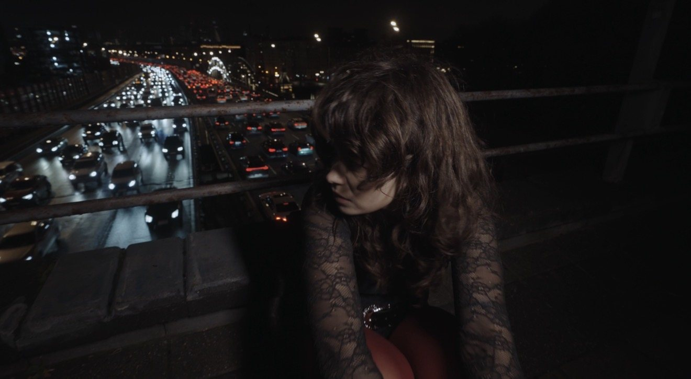

01Задача
Срочный запрос: образ для новой песни певицы МАЯК. На всю работу было два дня до съёмок.
Съёмка · новая песня
Образ для новой песни

Срочный запрос: образ для новой песни певицы МАЯК. На всю работу было два дня до съёмок.
Образ готов к съёмкам за два дня. Песня выходит в конце октября 2026.
Фото с бэкстейджа съёмки. Нажмите, чтобы открыть на весь экран